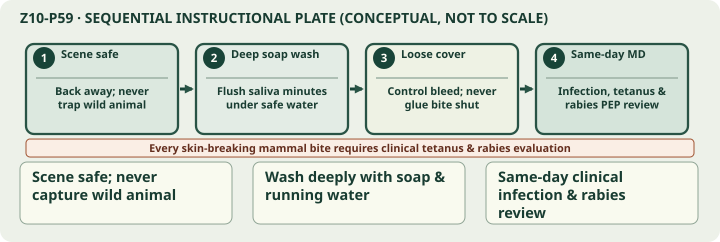

Z10-P59 · Wilderness medicine · New manuscript
Clean mammal bites thoroughly and arrange prompt infection and rabies review
Prevent severe bite-wound infection, tetanus, and fatal rabies through immediate washing and mandatory clinical consultation.
When it applies · Any wild or domestic mammal bite or deep scratch breaking skin (dog, raccoon, skunk, fox, squirrel, coyote, stray cat).
Equipment · Soap, copious clean running potable water, clean sterile dressing, and public-health/medical contact.

Actions
- Move safely away from the animal (do NOT try to trap or touch a wild or aggressive animal), then wash the bite immediately and thoroughly with soap and copious running potable water for several minutes to flush saliva and bacteria out.[M12, W29, T01]
- Control active bleeding with clean direct pressure, cover loosely with a sterile dressing without sealing dirty puncture wounds shut with glue, and document animal species, behavior, and location (or owner vaccination contact if domestic).[M12, M01, M06]
- Obtain prompt medical evaluation for EVERY skin-breaking mammal bite—clinicians assess infection risk (especially deep cat/hand bites), tetanus currency, and urgent rabies post-exposure prophylaxis (PEP).[M12]
Failure recognition · Washing a raccoon scratch lightly with a wet wipe and skipping medical follow-up because the scratch looks small.[M12]
Verify · Confirm prolonged soap-and-potable-water wash completed, bleeding controlled, animal details noted, and clinical evaluation scheduled promptly.[M12, M20]
Stop or change course · Deep bleeding bites, bites to face/hands/joints, or contact with wild rabies-vector species require immediate same-day emergency medical care.[M12, T02]
Evidence and editorial notes
- M01 · American College of Surgeons · STOP THE BLEED Training Course (current web edition)
- Section: Ensure Your Own Safety; Find Life-Threatening Bleeding; Compress · Conditions: Lay responder encountering severe external hemorrhage
Support: Ensure scene safety first, call 911, expose the wound to locate life-threatening bleeding, and apply firm continuous direct pressure with clean gauze or cloth.
Limitations: Does not replace formal hands-on Stop the Bleed training or EMS trauma care. · Conflicting evidence: None across ACS/ARC guidelines.
Editorial note: Separates life-threatening arterial/venous hemorrhage from minor scrapes. · Specialist reviewer: Wilderness medicine and trauma EMS
Primary source · checked 2026-11-24 - M06 · NIH / MedlinePlus · Wounds and Injuries (current web edition)
- Section: Minor Wound Cleaning, Protection, and Infection Red Flags · Conditions: Superficial cuts, scrapes, and abrasions with potable water available
Support: Rinse minor wounds thoroughly with clean potable water, cover with a clean sterile dressing, and monitor for worsening redness, warmth, swelling, pus, red streaks, or fever.
Limitations: Deep punctures, animal bites, retained foreign bodies, or heavily contaminated wounds require clinical evaluation and tetanus review. · Conflicting evidence: None; separates clean potable rinsing from harsh chemical wound scrubbing.
Editorial note: Anchors field wound hygiene and infection escalation cards. · Specialist reviewer: Wilderness medicine and wound care
Primary source · checked 2026-11-24 - M12 · NIH / MedlinePlus · Animal Bites (current web edition)
- Section: Animal Bites, Rabies Exposure, and Wound Infection · Conditions: Wild or domestic mammal bites or scratches breaking skin
Support: Wash bite wounds promptly with soap and clean running water, control bleeding, and obtain prompt medical evaluation for infection risk, tetanus status, and rabies post-exposure assessment.
Limitations: Bat encounters in sleeping areas can cause unrecognized bites requiring public-health rabies consultation. · Conflicting evidence: None; aligns with CDC rabies guidance.
Editorial note: Anchors mammal-bite hygiene and public-health rabies referral. · Specialist reviewer: Infectious disease and emergency medicine
Primary source · checked 2026-11-24 - M20 · NIH / MedlinePlus · First Aid Overview (current web edition)
- Section: Lay First-Aid Scope, Kit Readiness, and Documentation · Conditions: Pre-trip kit preparation and remote patient monitoring
Support: Maintain an inspected, unexpired first-aid kit matched to your actual training, keep written patient observations (time, responsiveness, breathing, symptoms, interventions) for EMS handoff, and practice skills in certified courses.
Limitations: Carrying advanced medical instruments without clinical training adds risk rather than capability. · Conflicting evidence: None; aligns with ARC and NPS-K.
Editorial note: Anchors kit sizing, SOAP-style lay observation logs, and scope-of-practice cards. · Specialist reviewer: Wilderness EMS and clinical education
Primary source · checked 2026-11-24 - T01 · American Red Cross · First Aid Steps (current web edition)
- Section: First Aid Steps > Check the scene; check the person · Conditions: Lay responder in United States; assess safety before contact
Support: Check scene safety, responsiveness, breathing and immediately life-threatening conditions.
Limitations: Lay guidance does not replace advanced clinical or rescue protocols. · Conflicting evidence: None; universal first-response opening gate.
Editorial note: Anchors scene-safety-first rule across Z01. · Specialist reviewer: EMS and wilderness medicine
Primary source · checked 2026-11-24 - T02 · American Red Cross · First Aid Steps (current web edition)
- Section: First Aid Steps > Call 9-1-1 · Conditions: Lay emergency response to unresponsiveness, abnormal breathing or severe bleeding
Support: Activate EMS and get needed equipment. Follow dispatcher directions and act within training.
Limitations: Remote locations may delay EMS arrival, requiring sustained stabilization after activation. · Conflicting evidence: None; aligns with NPS-E.
Editorial note: Mandates early emergency activation and dispatcher adherence. · Specialist reviewer: EMS and wilderness medicine
Primary source · checked 2026-11-24 - W29 · CDC · How to Make Water Safe in an Emergency (2024-09-19)
- Section: Use safe water for drinking, brushing teeth and food preparation · Conditions: Applicable emergency-water advice and permissible uses under active local advisory
Support: Use confirmed safe water for oral and food-contact tasks. Follow current local instructions for each use.
Limitations: Infant formula requires separate P26 conditions. Wound care requires the appropriate care source. · Conflicting evidence: See A02 claim audit for boundaries.
Editorial note: Separates potable-required tasks from non-potable utility uses. · Specialist reviewer: Public health and wilderness medicine
Primary source · checked 2026-11-24
Current assessment · A04-W29 (2026-11-25) · Bounded support newly confirmed (A04): Confirms safe water for oral and food-contact uses and the local-advisory boundary. Limits: Specialist review PENDING (Public health and wilderness medicine); publication HOLD. All release decisions pending.
Source lineage · NIH MedlinePlus Animal Bites; new manuscript · Classification · New manuscript.